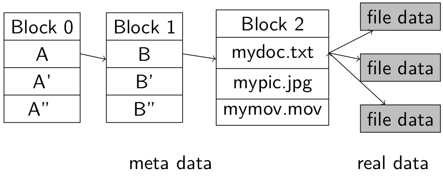
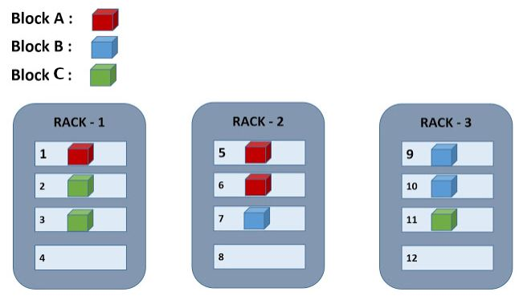

-- header-includes: - \usepackage{tikz} - \usepackage{pgfplots} --
50.043 Hadoop Distributed File System
Learning Outcomes
By the end of this unit, you should be able to
- Explain the file system model of HDFS
- Explain the architecture of HDFS
- Explain the replication placement strategy
- Explain the operation of HDFS client
- Explain the use of erasure coding
Hadoop
Hadoop is one of the widely-used framework for big data. It was started in 2005 by a group of Yahoo! scientists. The initial objective was to provide a scalable backend for the nutch crawler.
Over time Hadoop has evolved into a fully fledged distributed data storage and processing framework. It has a few major components
- MapReduce - the data processing layer
- Hadoop Distributed File System - the data storage layer
- YARN - the resource management layer
In this unit, our focus is on HDFS.
Hadoop Distributed File System
Hadoop Distrubuted File System was developed based on the white paper of a closed source project the google file system.
- The Google file system, Sanjay Ghemawat, Howard Bradley Gobioff and Shun-Tak Leung, ACM SIGOPS 2005
- https://static.googleusercontent.com/media/research.google.com/en//archive/gfs-sosp2003.pdf
Google File System
Google File System was created in the period of time where databases were expensive, but hard disks were cheap. They need to store a lot of non relational data (crawled data), i.e. data are in huge volume. These data needed to be processed by batches in huge sizes in a relative short amount of time, i.e. updating the search engine indices.
The only alternative during that time was network file system (NFS), which deemed to be limited by its original use cases.
- a file must reside on one and only one machine.
- there is no reliability guarantee, data loss could be hard to recovered
- it is not scalable, a computation over a huge batch of data cannot be distributed to multiple processors.
- there is no builtin replication mechanism, which leads to a high fail rate.
- file accessed over the network would incur huge amount of network I/O
The google team then identified a list of features that required by the search engine indexing use case, and ordered them according to the priority
- support many clients
- support many disks
- support file in size of petabytes
- offer high fault tolerance
- allow file read/file write like normal file system
It turned out no system can achieve all the above requirements. The team decided to drop the last one.
By design, Google file system is a distributed file system that supports only sequential read and append operation.
HDFS inherited the design of Google file system.
HDFS File system model
Like many conventional file systems, HDFS follows a hierarchical name space, i.e. data are organized by tree like structure, where each branch is a folder (sub folder) and the leaf nodes are the file.
|- A
| |- B
| |- mydoc.txt
| |- B'
| |- B''
|
|- A'
|- A''
For instance in the file system above, there are three folders under the root directory, namely A, A' and A''. Under A, there are three sub folders, B, B' and B''. Under B, we find a file mydoc.txt

In the above diagram, we find the illustration of the data storage of the file mydoc.txt. The first data block Block 0 stores the first level of folders. Folder A is a reference pointing at the data block Block 1, which stores the list of subfolders within. Sub-folder B is a reference pointing at the data block Block 2. mydoc.txt is the first entry in Block 2, which is an array of pointers pointing at the actual file data. The data blocks Block 0, Block 1 and Block 2 are known as the meta data. File data block (in grey color) are the real data.
There are several merits of such a file system model.
- It is a simple abstraction.
- It supports very large files, (could be larger than a single physical disk)
- Data can be distributed to multiple disks in multiple hosts.
Choice of Block Size
Building upon the above model, the next design decision to be made is the size of the block. In normal file system, (i.e .OSes), the size of a block is around 4KB. For relational database system, the block size can range from 4 to 32KB. For HDFS the default block size is 128MB, which can be changed via system configuration.
The advantage of a larger block size is to fetch more data in a single file IO operation, in the expense of larger unfilled disk space (due to data fragmentation). For HDFS, since files are written via append, data fragmentation is minimized.
HDFS Architecture
The HDFS architecture follows a master-worker pattern.

The master node, which is also known as the name node, keeps track of a set of data node.
The meta data of the files are stored in the name node. A secondary name node is provisioned for the backup purposes.
The real data are stored and replicated among the data nodes. By default HDFS recommends there should be at least 3 copies of the same data block, i.e. replication factor = 3. Replication factors 5 or 7 are also recommended.
A client, i.e. an application that tries to access a file in the HDFS, has to make the requests to the name node and waits for the responses.
Replication and Replica placement policy
Replication is to increase data survivability in case of hardware failure. But how and where shall we store / distribute the replicas of a data block? To maximize the survivability, it might be beneficial to take into account the actual location of the data nodes.
In data centers, servers are physically mounted and connected in racks. Multiple servers can be placed in a rack which shares a power source and network switch (with redudancy). In case of power or network failure, the entire rack is affected. Hence, it would be wise not to store replicas of a data block in servers located in the same rack. On the other hand intra rack data transfer will be more cost effective.
In a HDFS cluster, when the rack information is present, the replicas of a data block are distributed as follows
- Max 1 replica per datanode
- Max 2 replicas per rack
- Number of racks for replication should be less than the replication factor
For example, we consider the following setup with 3 racks, each rack contains 3 datanodes. 3 data blocks need to be stored and replicated with RF = 3.

The first copy of data block A is stored in data node 1. The 2nd copy must not be stored in any other data node in rack 1. In this case the system randomly picks one rack out of 2 and 3. It places the 2nd copy in data node 5 of rack 2 in this case. The 3rd replica can be placed in any rack. In this case put it in data node 6.
HDFS client operation
Read
When a client attempts to read a file in the HDFS.
- The client requests for the data block locations of the file from the name node.
- The name node returns the list of data block locations to the client.
- Based on the data block locations, the client requests for the data blocks from the data node.
- The data nodes replied the client with the data being requested.
Write
When a client attempts to write/append to a file in the HDFS.
- The client creates the meta data entry in the name node.
- The name node allocates and returns the first block locations to the client.
- Based on the first block locations the client initializes the data writing pipeline.
- The data will be sent in the daisy chain manner from the client to the data nodes.
- When the data is successfully transmitted, an acknowledgement will be sent to data source; When some data block (replica) write operation fails, the information is recorded by the name node and the operation will be re-executed on some data node.
- When the last data block is written, the client initiates a close request to the name node.
- The name node checks with the data nodes to ensure the minimum replica requirement is met.
- The data nodes reports the minimum replica status back to the name node.
- The name node sends the acknowledgement to the client notifying that the file write operation was successful.
In case of the minimum replica requirement is not satisfied, the name node will arrange re-distribution the replica.
Alternative To Data Replication
Replicating data and redistributing them is a simple and effective way to improve fault tolerance. However, one draw-back of data replication is the data overhead. A system with replication factor n will lead to (n-1) * 100% storage overhead and (1/n) storage efficiency.
For example, when n = 3, we have 200% storage overhead and 0.3333 storage efficiency.
One of the popular alternatives to data replication is erasure coding. The main idea of erasure coding is not to replicate data, instead it generates a parity for each segment of actual data, with which the actual data could be restored in case of data loss. The idea behind was inspired by the Exclusive OR (XOR) operation for bits.
Properties of XOR
Recall that XOR operation \(\bigoplus\) on bits
| IN | IN | XOR |
|---|---|---|
| 0 | 0 | 0 |
| 1 | 0 | 1 |
| 0 | 1 | 1 |
| 1 | 1 | 0 |
having some nice properties
We can use the result of XOR to recover if one of the inputs is lost.
We are trying to transfer this idea to increase the recoverability of the HDFS data. Let one of the input to be the actual data, the other input is a special key, the output is the data with the parity.
One issue remained is that we are dealing with more than bit of actual data, and we want to keep the special key and the data parity relatively small.
Reed-solomon Algorithm
Addressing the issue leads us to the Reed-solomon algorithm.
The algorithm requires a Generator Matrix \(G^T\) (the special key), which has the following requirement.
- It is \(n \times k\) matrix
- all \(k \times k\) sub matrices in \(G^T\) are non-singular (the inverse matrices exist).
The actual data (from HDFS) are arranged into a \(k \times L\) matrix. What \(L\) is not important for demonstration purpose, we assume may let \(L = 1\) for simplicity.

In the above diagram we multiply the generator matrix with the actual data, which produces a code word, consists of the data and the parity.
Let's instantiate the diagram with concrete numbers.
Thanks to the properties of the left operand \(G^T\), the first four rows of the code word is identical to the data.
In the HDFS we will store the \(G^T\) in some safe place, i.e. name node with backup and the codeword is distributed among the data nodes
Now let's say we lose the 2nd and 4th rows in the codeword and try to recover the data.
We remove the correspondent rows from the \(G^T\),
Based on the matrix multiplication the following equation holds
where the question marks are the actual to be reovered.
Thanks to the fact that all \(k \times k\) sub matrices in \(G^T\) are non-singular, the inverse of \(G^{T^{-1}}_{\neg{(1,3)}}\) exists
We cancel \(G^{T^{-1}}_{\neg{(1,3)}} \times G^T_{\neg{(1,3)}}\) from the LHS $$ \begin{bmatrix} 1 \ 0 \ 1 \ 0 \end{bmatrix} = \begin{bmatrix} 1 & 0 & 0 & 0 \ 0 & -1 & 1 & 0 \ 0 & 1 & 0 & 0 \ -1 & -1 & 0 & 1 \end{bmatrix} \times \begin{bmatrix} 1 \ 1 \ 1 \ 2 \end{bmatrix} $$
We recover the lost data.
Erasure Coding storage overhead and data efficiency
Erase coding is more economical compared to data replication. \(G^T\) is fixed for all data, hence its overhead is neglectable. We write \(RS(k,m)\) to denote that \(G^T\) is a matrix of \((k+m) \times k\) and \(k\) is the number of rows of the actual data matrix and \(m\) is the number of parity rows. We have \(m/k\) storage overhead and \(k / (k + m)\) storage efficiency.
One crucial observation is that we can always recover the a codeword with \((k +m) \times 1\) when the number of lost cells is less than or equal to \(m\).
Question
What happen when \(L > 1\)? Hint: you may think about how matrix multiplication works.